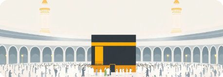
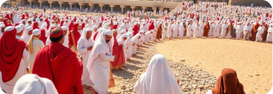

Journey of a Lifetime: Hajj & Umrah Guide
Embark on a profound spiritual journey with our comprehensive guide to Hajj and Umrah. This section provides detailed steps, rituals, and essential preparations to help you fulfill your pilgrimage with ease and devotion.
Preparing for Your Spiritual Journey
Essential steps before embarking on Umrah, focusing on spiritual readiness and practical arrangements to ensure a smooth pilgrimage.
Checklist:
Purify your intentions for Allah (Niyyah).
Arrange all necessary travel documents and visas.
Pack essential items: Ihram garments, prayer mat, personal hygiene, comfortable shoes.
Learn the rituals and supplications specific to Umrah.

The Sacred Rites of Umrah
A detailed guide to performing the fundamental rituals of Tawaf, Sa'i, and Halq/TaQseer, completing your Umrah pilgrimage.
Checklist:
Enter the state of Ihram before crossing the Miqat.
Perform Tawaf (circumambulation) around the Kaaba seven times.
Pray two Raka'at behind Maqam Ibrahim.
Drink blessed Zamzam water.
Perform Sa'i (walking) between Safa and Marwah seven times.
Perform Halq (shaving) or TaQseer (trimming) of the hair to exit Ihram.

Understanding Hajj: The Fifth Pillar
An overview of the greater pilgrimage, its profound significance in Islam, and its core components that form the spiritual foundation.
Checklist:
Understand the types of Hajj: Tamattu', Qiran, and Ifrad.
Learn about the specific requirements and intention for Ihram for Hajj.
Familiarize yourself with the major dates and sacred locations (Mina, Arafat, Muzdalifah).
Prepare physically and mentally for the demanding journey.

The Days of Hajj: Rituals in Detail
A step-by-step guide through the intensive rituals performed during the days of Hajj, from Mina to the final Tawaf.
Checklist:
Travel to Mina and spend the first day of Hajj.
Perform the standing on Arafat (Waqfat Arafat), the most crucial rite.
Spend the night at Muzdalifah and collect pebbles.
Perform Rami (stoning of the devil) at Jamarat.
Perform the animal sacrifice (Qurbani), if applicable.
Perform Tawaf Al-Ifadah (main Tawaf of Hajj).
Completion and Return
Concluding your Hajj journey with the farewell Tawaf, reflecting on the experience, and maintaining your spiritual connection.
Checklist:
Perform Tawaf Al-Wada (Farewell Tawaf) before leaving Makkah.
Reflect on the profound spiritual transformation and lessons learned.
Maintain your heightened spiritual connection in daily life.
Share your experiences and blessings with family and community.